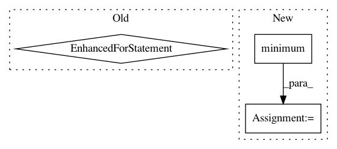

717eedd5f9ce22431e40a15c378863de6730d3e8,mne/viz/raw.py,,_update_raw_data,#Any#,48
Before Change
// we might as well actually filter the bad segments, too
these_bounds = np.unique(
np.maximum(np.minimum(params["filt_bounds"], start), stop))
for start_, stop_ in zip(these_bounds[:-1], these_bounds[1:]):
data[data_picks, start_:stop:] = \
filtfilt(params["ba"][0], params["ba"][1],
data[data_picks, start_:stop_], axis=1, padlen=0)
// scale
for di in range(data.shape[0]):
ch_name = params["info"]["ch_names"][di]
// stim channels should be hard limited
if params["types"][di] == "stim":
After Change
starts, stops = params["filt_bounds"]
mask = (starts < stop) & (stops > start)
starts = np.maximum(starts[mask], start) - start
stops = np.minimum(stops[mask], stop) - start
for start_, stop_ in zip(starts, stops):
if isinstance(params["ba"], np.ndarray):
data[data_picks, start_:stop_] = _overlap_add_filter(
data[data_picks, start_:stop_], params["ba"], copy=False)
In pattern: SUPERPATTERN
Frequency: 3
Non-data size: 3
Instances
Project Name: mne-tools/mne-python
Commit Name: 717eedd5f9ce22431e40a15c378863de6730d3e8
Time: 2019-03-15
Author: larson.eric.d@gmail.com
File Name: mne/viz/raw.py
Class Name:
Method Name: _update_raw_data
Project Name: brilee/MuGo
Commit Name: 3f09a5c3431a0b259bd7310d8d3c9737ff514fa7
Time: 2016-10-24
Author: brian.kihoon.lee@gmail.com
File Name: features.py
Class Name:
Method Name: make_onehot
Project Name: ysig/GraKeL
Commit Name: 13ea3187b8f9f7eaee48e2aa8ef9d6d37023bfda
Time: 2020-07-18
Author: giannisnik@hotmail.com
File Name: grakel/kernels/weisfeiler_lehman_optimal_assignment.py
Class Name: WeisfeilerLehmanOptimalAssignment
Method Name: fit_transform